R
# Operasi dasar
2 + 3 # Penjumlahan[1] 57 - 5 # Pengurangan[1] 23 * 5 # Perkalian[1] 153 / 4 # Pembagian[1] 0.752^3 # Pangkat[1] 82:4 # Sequence[1] 2 3 4Rangkuman Materi R
Kembali ke Arsip Praktikum PSD 2025
Setelah menyelesaikan modul ini, mahasiswa diharapkan mampu:
Selamat! Anda telah menyelesaikan hampir seluruh perjalanan pembelajaran di Pengantar Sains Data. Kini saatnya untuk mengkonsolidasikan semua ilmu yang telah Anda pelajari.
Bayangkan Anda adalah seorang Data Analyst di perusahaan konsultan yang diminta untuk melakukan analisis komprehensif terhadap berbagai dataset klien. Untuk itu, Anda perlu menguasai:
Modul ini dirancang sebagai review komprehensif yang akan membantu Anda mengingat kembali dan mengintegrasikan semua keterampilan tersebut.
R adalah bahasa pemrograman yang powerful untuk analisis data. Mari kita mulai dengan operasi dasar:
R
# Operasi dasar
2 + 3 # Penjumlahan[1] 57 - 5 # Pengurangan[1] 23 * 5 # Perkalian[1] 153 / 4 # Pembagian[1] 0.752^3 # Pangkat[1] 82:4 # Sequence[1] 2 3 4R
# Menggunakan <- (lebih umum) atau =
apel <- 4
jeruk = 7
# Memanggil variabel
print(apel)[1] 4# Operasi dengan variabel
apel * jeruk[1] 28banyak_buah <- apel + jerukR
# Melihat semua variabel
ls()
# Menghapus variabel
rm(banyak_buah)
# Menghapus semua variabel
rm(list = ls())Vector adalah kumpulan data dengan tipe yang sama, merupakan struktur data fundamental di R.
R
# Membuat vector numerik
nilai_ujian <- c(85, 92, 78, 88, 95)
nilai_ujian[1] 85 92 78 88 95# Membuat vector karakter
nama_buah <- c("apel", "jeruk", "pisang")
nama_buah[1] "apel" "jeruk" "pisang"# Mengakses elemen vector
nama_buah[1] # Elemen pertama[1] "apel"nilai_ujian[2:4] # Elemen ke-2 sampai ke-4[1] 92 78 88Enam Tipe Dasar Vector
Ada enam tipe utama, namun empat di antaranya akan Anda gunakan 99% setiap saat.
Ini adalah tipe default untuk angka di R. Tipe ini bisa menampung angka desimal.
R
ipk <- c(3.55, 4.0, 2.89)
ipk[1] 3.55 4.00 2.89class(ipk) # class() memberitahu kita tipe objeknya[1] "numeric"Jika Anda yakin hanya akan bekerja dengan bilangan bulat, Anda bisa membuatnya secara eksplisit dengan menambahkan L di belakang angka. Ini menghemat memori.
R
jumlah_sks <- c(24L, 21L, 18L)
jumlah_sks[1] 24 21 18class(jumlah_sks)[1] "integer"Untuk menyimpan data teks. Selalu diapit oleh tanda kutip " atau '.
R
mata_kuliah <- c("Kalkulus", "Aljabar Linear", "Statistika")
mata_kuliah[1] "Kalkulus" "Aljabar Linear" "Statistika" class(mata_kuliah)[1] "character"Hanya bisa berisi tiga nilai: TRUE, FALSE, atau NA (Not Available/Missing). Sangat penting untuk operasi perbandingan dan filter.
R
lulus_ujian <- c(TRUE, TRUE, FALSE)
lulus_ujian[1] TRUE TRUE FALSEclass(lulus_ujian)[1] "logical"Sampling sangat penting untuk analisis statistik:
R
# Sampling tanpa pengembalian (without replacement)
sample(nama_buah, 2)[1] "jeruk" "pisang"# Sampling dengan pengembalian (with replacement)
sample(nama_buah, 5, replace = TRUE)[1] "jeruk" "pisang" "pisang" "apel" "pisang"Package memperluas fungsionalitas R. Untuk import data, kita memerlukan package khusus.
R
# Instal package (hanya sekali)
install.packages("readr")
install.packages("readxl")R
# Aktifkan package (setiap sesi)
library(readr)
library(readxl)Import Data dari Berbagai Format:
R
# Import CSV
df1 <- read.csv("./data.csv")
# Import Excel
df2 <- read_excel("./data.xlsx")
# Melihat data
View(df1)
head(df1) # 6 baris pertama
tail(df1) # 6 baris terakhirMari kita gunakan dataset iris yang sudah tersedia di R:
R
# Mengaktifkan dataset built-in
data("iris")
# Melihat 6 baris pertama
head(iris) Sepal.Length Sepal.Width Petal.Length Petal.Width Species
1 5.1 3.5 1.4 0.2 setosa
2 4.9 3.0 1.4 0.2 setosa
3 4.7 3.2 1.3 0.2 setosa
4 4.6 3.1 1.5 0.2 setosa
5 5.0 3.6 1.4 0.2 setosa
6 5.4 3.9 1.7 0.4 setosaInformasi Struktur Data:
R
# Melihat dimensi (baris x kolom)
dim(iris)[1] 150 5# Melihat nama kolom
names(iris)[1] "Sepal.Length" "Sepal.Width" "Petal.Length" "Petal.Width" "Species" # Struktur data
str(iris)'data.frame': 150 obs. of 5 variables:
$ Sepal.Length: num 5.1 4.9 4.7 4.6 5 5.4 4.6 5 4.4 4.9 ...
$ Sepal.Width : num 3.5 3 3.2 3.1 3.6 3.9 3.4 3.4 2.9 3.1 ...
$ Petal.Length: num 1.4 1.4 1.3 1.5 1.4 1.7 1.4 1.5 1.4 1.5 ...
$ Petal.Width : num 0.2 0.2 0.2 0.2 0.2 0.4 0.3 0.2 0.2 0.1 ...
$ Species : Factor w/ 3 levels "setosa","versicolor",..: 1 1 1 1 1 1 1 1 1 1 ...Ringkasan Statistik:
R
# Ringkasan lengkap
summary(iris) Sepal.Length Sepal.Width Petal.Length Petal.Width
Min. :4.300 Min. :2.000 Min. :1.000 Min. :0.100
1st Qu.:5.100 1st Qu.:2.800 1st Qu.:1.600 1st Qu.:0.300
Median :5.800 Median :3.000 Median :4.350 Median :1.300
Mean :5.843 Mean :3.057 Mean :3.758 Mean :1.199
3rd Qu.:6.400 3rd Qu.:3.300 3rd Qu.:5.100 3rd Qu.:1.800
Max. :7.900 Max. :4.400 Max. :6.900 Max. :2.500
Species
setosa :50
versicolor:50
virginica :50
Statistik Deskriptif Spesifik:
R
# Mean (rata-rata)
mean(iris$Sepal.Length)[1] 5.843333# Median (nilai tengah)
median(iris$Sepal.Length)[1] 5.8# Modus
library(DescTools)
Mode(iris$Sepal.Length)[1] 5
attr(,"freq")
[1] 10R
# Variansi
var(iris$Sepal.Length)[1] 0.6856935# Standar deviasi
sd(iris$Sepal.Length)[1] 0.8280661# Range (rentang)
range(iris$Sepal.Length)[1] 4.3 7.9R
# Minimum
min(iris$Sepal.Length)[1] 4.3# Maksimum
max(iris$Sepal.Length)[1] 7.9# Banyak data
length(iris$Sepal.Length)[1] 150# Total/jumlah
sum(iris$Sepal.Length)[1] 876.5# Standard error
se <- sd(iris$Sepal.Length) / sqrt(length(iris$Sepal.Length))
se[1] 0.06761132Subsetting/Filter Data:
R
# Menggunakan subset
iris_setosa <- subset(iris, Species == "setosa")
iris_longsepal <- subset(iris, Sepal.Length >= 5.5)
# Menggunakan dplyr
library(dplyr)
Attaching package: 'dplyr'The following objects are masked from 'package:stats':
filter, lagThe following objects are masked from 'package:base':
intersect, setdiff, setequal, unioniris_setosa <- filter(iris, Species == "setosa")Visualisasi membantu kita memahami distribusi dan pola dalam data.
Membuat Tabel Frekuensi:
R
# Tabel frekuensi untuk Species
freq_species <- data.frame(table(iris$Species, dnn = "Species"))
freq_species Species Freq
1 setosa 50
2 versicolor 50
3 virginica 50R
barplot(freq_species$Freq,
names.arg = freq_species$Species,
main = "Persebaran Spesies Iris",
xlab = "Spesies",
ylab = "Frekuensi",
col = c("red", "green", "blue"),
border = "black")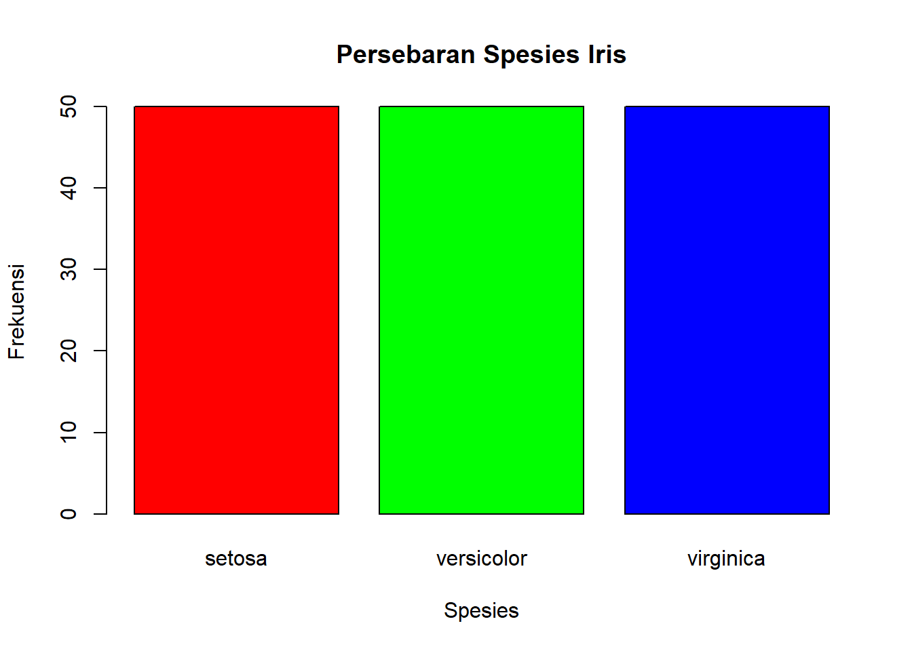
R
pie(freq_species$Freq,
labels = freq_species$Species,
main = "Persebaran Spesies Iris",
col = c("red", "green", "blue"))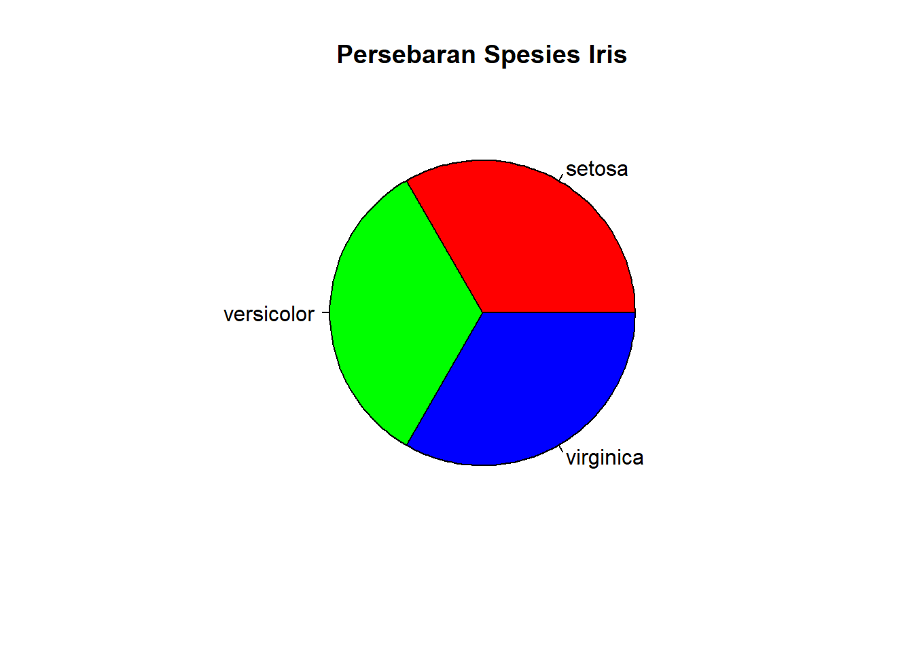
R
hist(iris$Sepal.Length,
main = "Histogram Sepal Length",
xlab = "Sepal Length",
ylab = "Frekuensi",
col = "lightblue",
border = "black",
breaks = 15)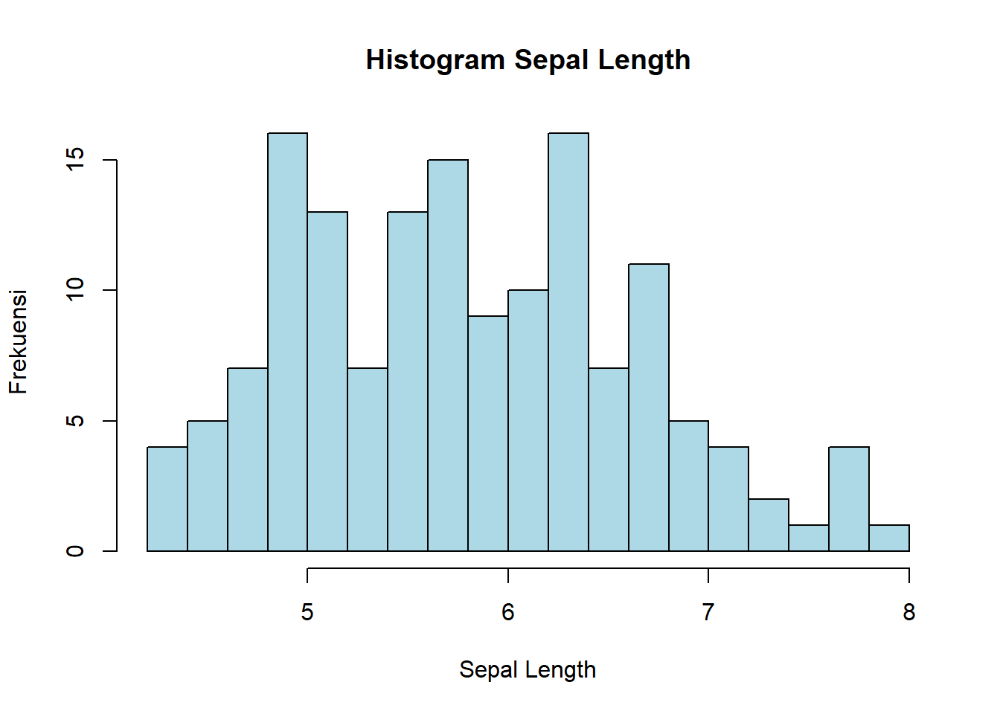
R
# Boxplot berdasarkan grup
boxplot(Sepal.Length ~ Species, data = iris,
main = "Sepal Length by Species",
xlab = "Species",
ylab = "Sepal Length",
col = c("red", "green", "blue"))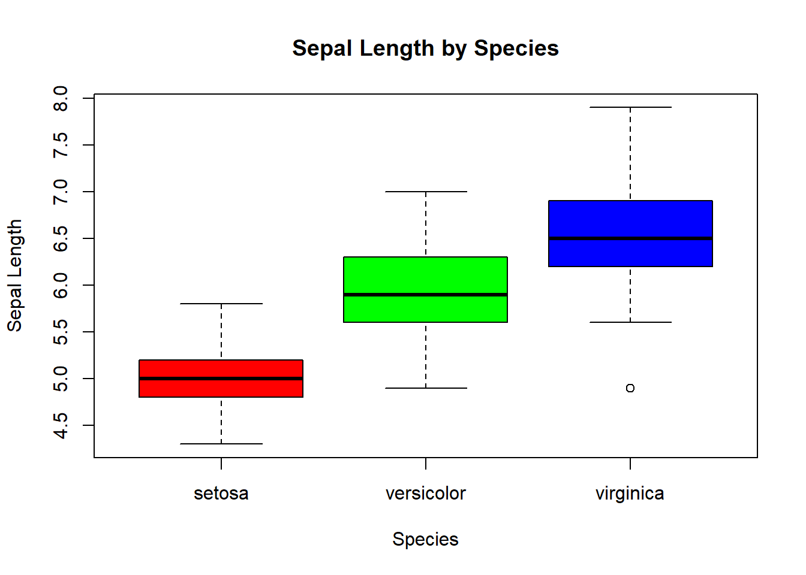
R
plot(iris$Sepal.Length, iris$Sepal.Width,
main = "Sepal Length vs Width",
xlab = "Sepal Length",
ylab = "Sepal Width",
col = iris$Species,
pch = 19)
legend("topright", legend = levels(iris$Species),
col = 1:3, pch = 19)
R
# Menggunakan time series data
data("nhtemp")
plot(nhtemp,
main = "Average Yearly Temperature in New Haven",
ylab = "Temperature (F)",
xlab = "Year",
col = "blue",
lwd = 2)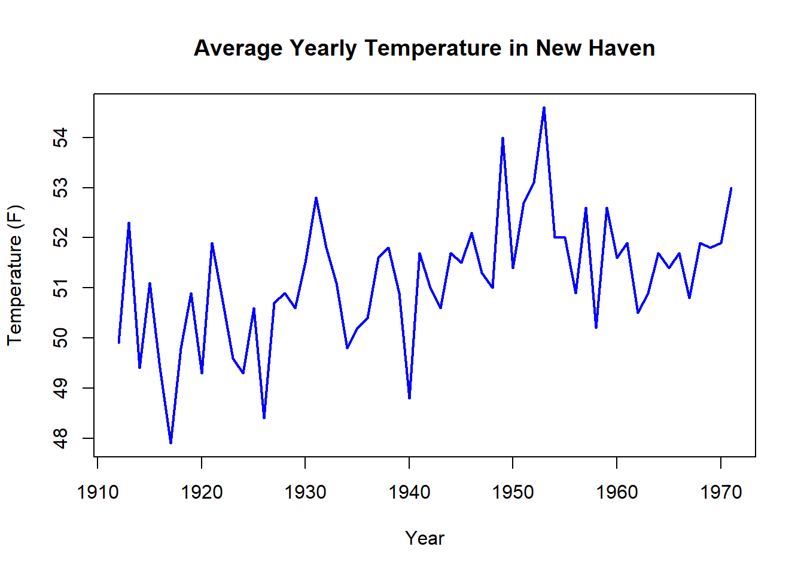
ggplot2 adalah package yang sangat powerful untuk visualisasi di R.
R
install.packages("ggplot2")R
library(ggplot2)R
ggplot(iris, aes(x = Sepal.Length, y = Sepal.Width, color = Species)) +
geom_point(size = 3) +
labs(title = "Sepal Length vs Width by Species",
x = "Sepal Length (cm)",
y = "Sepal Width (cm)") +
theme_minimal()
R
# Menggunakan dataset mtcars
data(mtcars)
ggplot(mtcars, aes(x = factor(cyl))) +
geom_bar(fill = "steelblue", width = 0.7) +
labs(title = "Distribution of Cylinders",
x = "Number of Cylinders",
y = "Count") +
theme_minimal()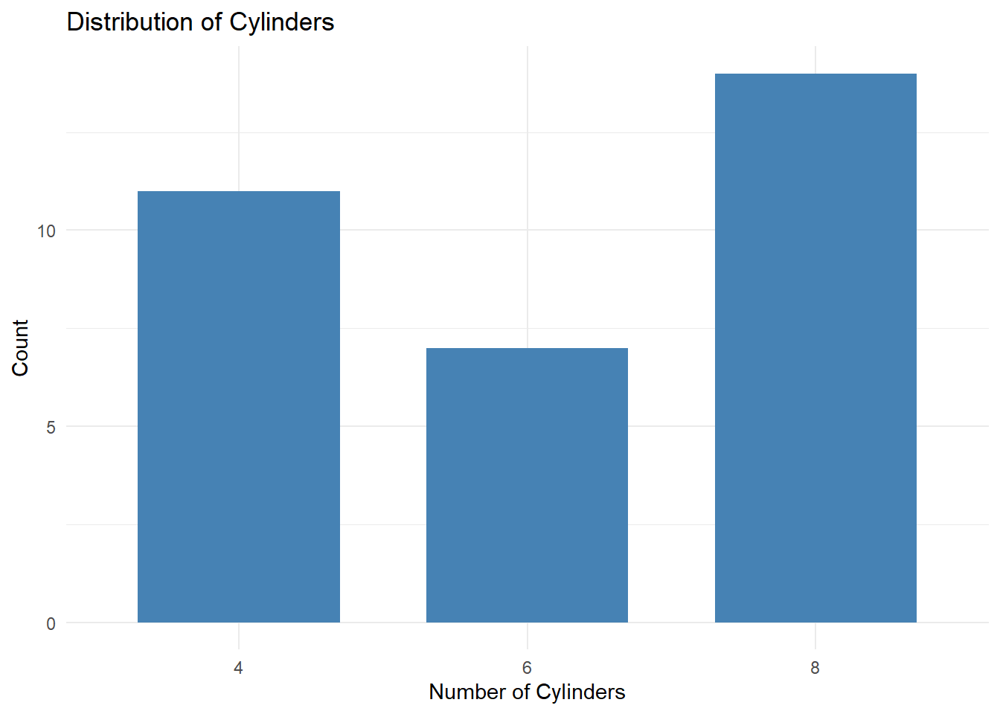
R
ggplot(iris, aes(x = Sepal.Length)) +
geom_histogram(binwidth = 0.3, fill = "lightblue", color = "black") +
labs(title = "Histogram of Sepal Length",
x = "Sepal Length (cm)",
y = "Frequency") +
theme_minimal()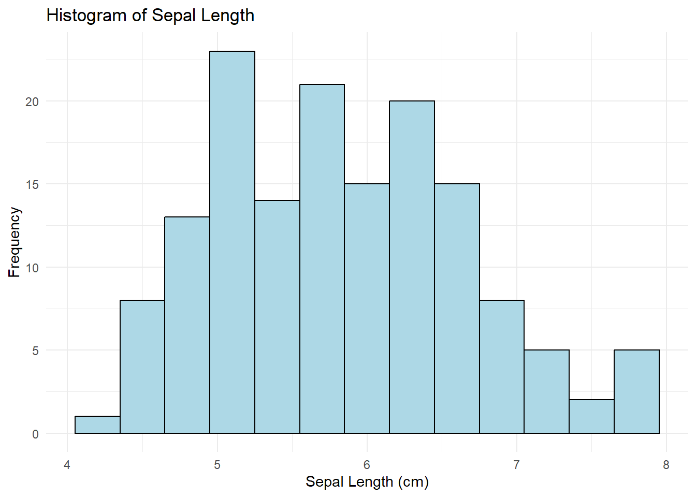
R
ggplot(iris, aes(x = Species, y = Sepal.Length, fill = Species)) +
geom_boxplot() +
labs(title = "Sepal Length by Species",
x = "Species",
y = "Sepal Length (cm)") +
theme_minimal() +
theme(legend.position = "none")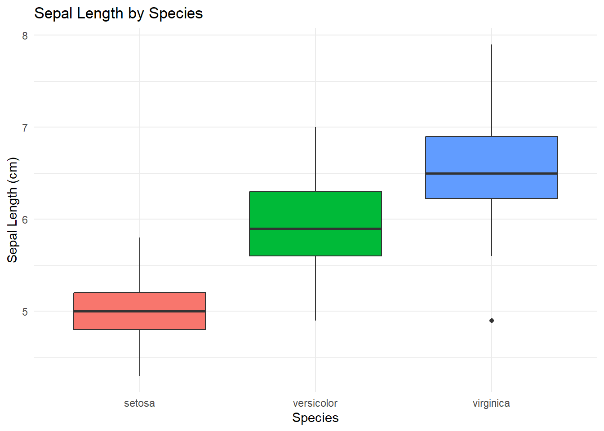
R
# Menggunakan dataset economics
ggplot(economics, aes(x = date, y = unemploy)) +
geom_line(color = "blue", linewidth = 1) +
labs(title = "Unemployment Over Time",
x = "Date",
y = "Number of Unemployed (thousands)") +
theme_minimal()
Untuk setiap distribusi di R, tersedia 4 fungsi utama:
d...(): Density function (PMF untuk diskrit, PDF untuk kontinu)p...(): Probability function (CDF - Cumulative Distribution Function)q...(): Quantile function (inverse CDF)r...(): Random number generator (RNG)R
install.packages("Rlab")R
library(Rlab)R
# X ~ Bernoulli(p=0.7)
p <- 0.7
# PMF: P(X = x)
dbern(0, prob = p) # P(X=0)[1] 0.3dbern(1, prob = p) # P(X=1)[1] 0.7# CDF: P(X ≤ x)
pbern(0, prob = p)[1] 0.3pbern(1, prob = p)[1] 1# Quantile
qbern(0.3, prob = p)[1] 0# Random generation
rbern(10, prob = p) [1] 0 1 0 0 1 0 0 1 1 0# Visualisasi PMF
support <- c(0, 1)
plot(support, dbern(support, prob = p),
type = "h", lwd = 5, col = "blue",
ylim = c(0, 1),
main = "PMF Bernoulli(p=0.7)",
xlab = "x", ylab = "P(X = x)")
points(support, dbern(support, prob = p), pch = 19, cex = 2, col = "blue")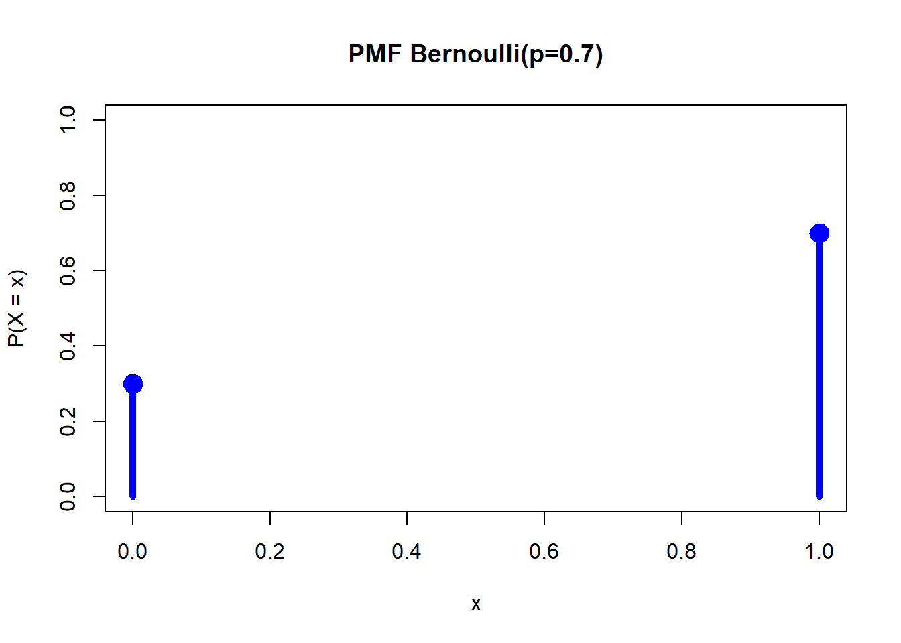
R
# X ~ Binomial(n=10, p=0.7)
n <- 10
p <- 0.7
# PMF: P(X = x)
dbinom(2, size = n, prob = p)[1] 0.001446701# CDF: P(X ≤ x)
pbinom(2, size = n, prob = p)[1] 0.001590386# Quantile
qbinom(0.05, size = n, prob = p)[1] 5# Random generation
random_binom <- rbinom(100, size = n, prob = p)
# Visualisasi PMF
x <- 0:n
plot(x, dbinom(x, size = n, prob = p),
type = "h", lwd = 5, col = "darkgreen",
main = "PMF Binomial(10, 0.7)",
xlab = "x", ylab = "P(X = x)")
points(x, dbinom(x, size = n, prob = p), pch = 19, cex = 2, col = "darkgreen")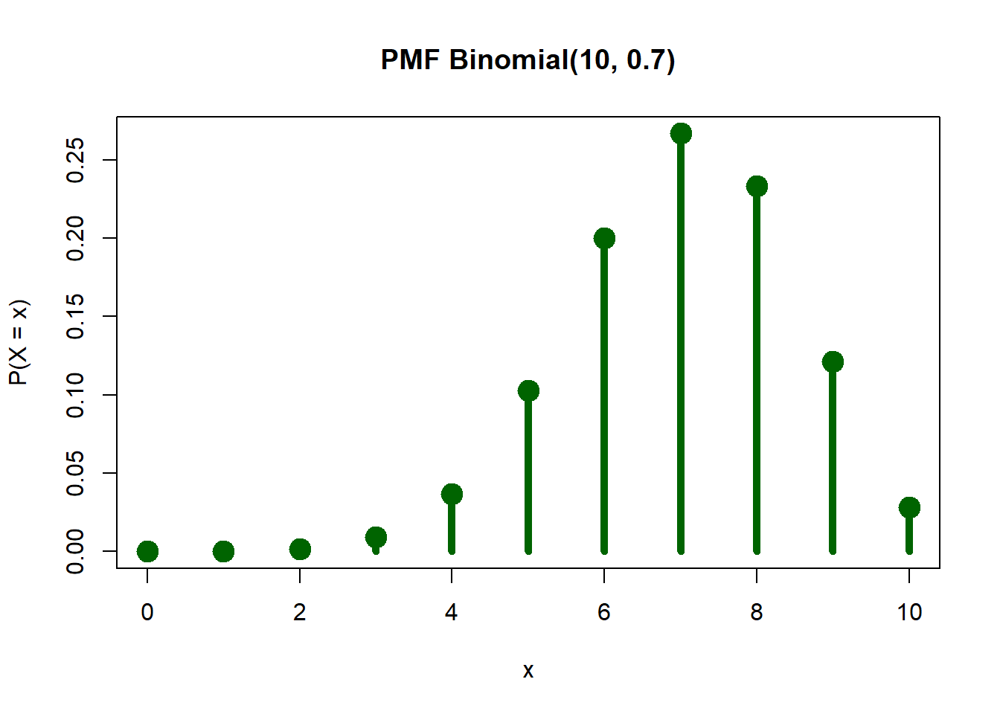
# Histogram dari random generation
hist(random_binom,
breaks = 10,
main = "Histogram 100 sampel dari Binom(10, 0.7)",
xlab = "Nilai X",
ylab = "Frekuensi",
col = "lightgreen")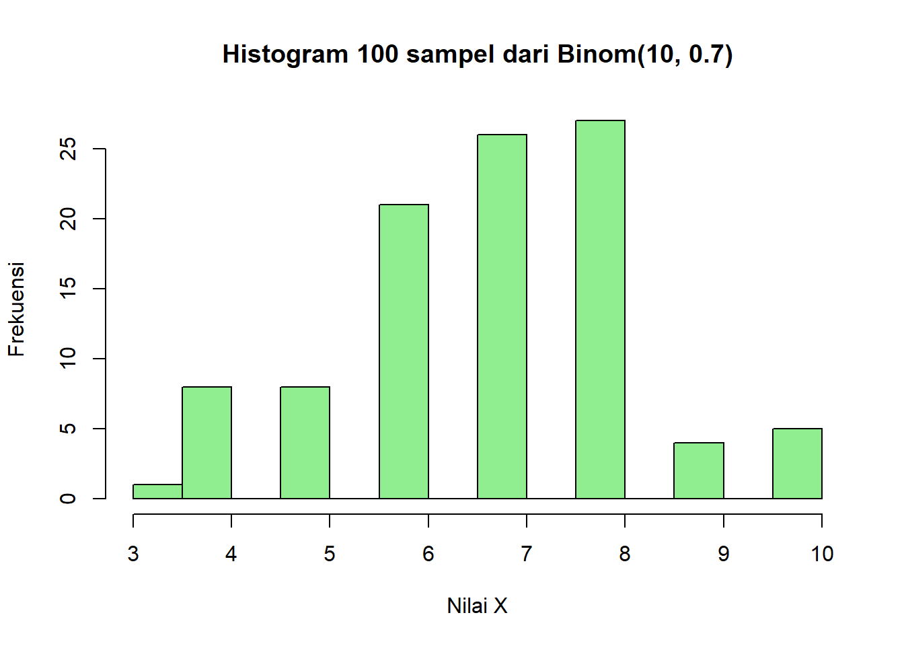
R
# X ~ Poisson(λ=3)
lambda <- 3
# PMF: P(X = x)
dpois(2, lambda = lambda)[1] 0.2240418# CDF: P(X ≤ x)
ppois(2, lambda = lambda)[1] 0.4231901# Quantile
qpois(0.5, lambda = lambda)[1] 3# Random generation
rpois(100, lambda = lambda) [1] 5 7 4 3 4 1 2 3 5 4 1 0 4 1 4 4 2 3 5 5 5 1 7 5 7 2 1 1 2 3 2 2 6 3 1 7 6
[38] 3 3 2 7 4 1 7 3 6 1 0 3 1 2 2 1 2 3 5 3 1 1 3 3 5 5 2 3 4 1 2 3 3 8 5 3 1
[75] 4 3 4 3 2 4 2 2 3 3 5 3 4 1 5 4 3 2 2 3 3 2 2 3 3 2# Visualisasi PMF
x <- 0:15
plot(x, dpois(x, lambda = lambda),
type = "h", lwd = 5, col = "purple",
main = "PMF Poisson(λ=3)",
xlab = "x", ylab = "P(X = x)")
points(x, dpois(x, lambda = lambda), pch = 19, cex = 2, col = "purple")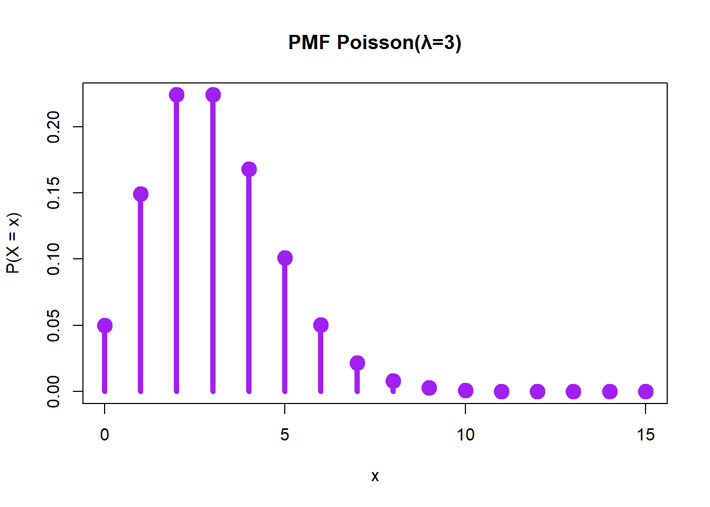
R
library(distr)
library(distrEx)R
# Membuat distribusi uniform diskrit pada {1,2,3,4,5,6} (dadu)
support <- c(1, 2, 3, 4, 5, 6)
k <- length(support)
prob <- rep(1/k, k)
dist_dadu <- DiscreteDistribution(support, prob)
# Plot
plot(dist_dadu, main = "Distribusi Uniform Diskrit (Dadu)")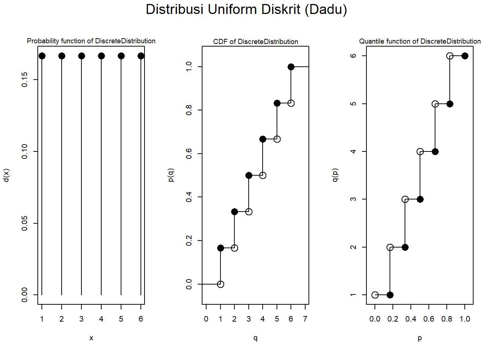
# PMF
d(dist_dadu)(4)[1] 0.1666667# CDF
p(dist_dadu)(4)[1] 0.6666667# Quantile
q(dist_dadu)(0.5)[1] 3# Random generation
r(dist_dadu)(10) [1] 2 1 5 1 5 4 1 3 3 1# Ekspektasi dan variansi
E(dist_dadu)[1] 3.5var(dist_dadu)[1] 2.916667R
# X ~ N(μ=50, σ²=100)
mu <- 50
sigma <- 10
# Contoh: P(45 < X < 62)
prob <- pnorm(62, mean = mu, sd = sigma) - pnorm(45, mean = mu, sd = sigma)
cat(sprintf("P(45 < X < 62) = %.4f\n", prob))P(45 < X < 62) = 0.5764# Menggunakan Z-score
z1 <- (62 - mu) / sigma
z2 <- (45 - mu) / sigma
prob_z <- pnorm(z1) - pnorm(z2)
cat(sprintf("Dengan Z-score: %.4f\n", prob_z))Dengan Z-score: 0.5764# Visualisasi
x <- seq(20, 80, length = 200)
plot(x, dnorm(x, mean = mu, sd = sigma),
type = "l", lwd = 2, col = "darkred",
main = "PDF Normal N(50, 100)",
xlab = "x", ylab = "f(x)")
# Area P(45 < X < 62)
x_shade <- seq(45, 62, length = 100)
y_shade <- dnorm(x_shade, mean = mu, sd = sigma)
polygon(c(45, x_shade, 62), c(0, y_shade, 0), col = rgb(1, 0, 0, 0.3), border = NA)
abline(v = mu, col = "blue", lty = 2)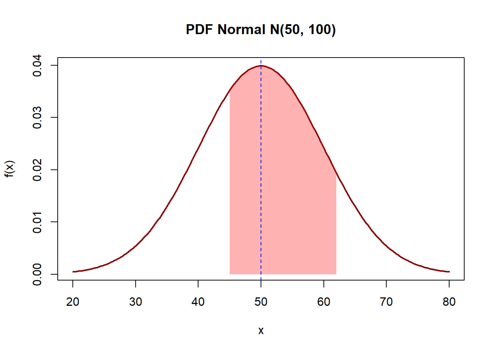
R
# X ~ N(μ=0, σ²=1) - Distribusi Normal Standar
# PDF: f(x)
dnorm(0, mean = 0, sd = 1)[1] 0.3989423# CDF: P(X ≤ x)
pnorm(1.96, mean = 0, sd = 1) # ≈ 0.975[1] 0.9750021# Quantile: P(X ≤ q) = p
qnorm(0.975, mean = 0, sd = 1) # ≈ 1.96[1] 1.959964# Random generation
rnorm(100, mean = 0, sd = 1) [1] -0.980520682 -0.915321404 -0.242386558 2.029502355 0.783383026
[6] 2.397292595 0.836565411 2.496647504 -1.194228162 -0.214326910
[11] -0.644745295 -0.942863174 0.582820234 0.624942260 -0.064528109
[16] 0.538575959 0.454537066 0.587575703 0.513498628 -0.648273294
[21] -0.361535386 -0.208882508 -0.191647582 -1.515058032 1.202807428
[26] 2.462176101 -0.054692734 0.928465006 -1.849197876 -0.176551199
[31] -0.076880383 1.318193516 2.718757185 -1.593345393 2.132974962
[36] -0.535683237 -0.920330812 -0.930286111 0.280197305 0.917064954
[41] -2.346834487 -0.626612005 -0.223786056 2.561655198 0.246609717
[46] -0.084556006 1.088663428 0.062612465 0.165482326 1.282162313
[51] -0.386215486 0.384398038 -0.212153146 -0.398740606 0.979794148
[56] -0.457217645 1.398951416 -0.614087144 -0.511371504 -1.234483691
[61] -0.379607236 0.190716622 0.424068282 -0.816954468 -0.235109421
[66] -0.555044910 -0.468561578 1.307533652 1.926788129 0.980300805
[71] 0.009675772 0.921451351 0.742992046 0.507275510 -0.619532895
[76] -0.384915337 0.164747569 0.633441643 -1.258560231 -0.887734437
[81] 1.064301904 -0.117037256 0.899000183 -1.691872858 -0.433265642
[86] 0.651411703 -0.183497059 -0.572777184 0.296999871 0.572448351
[91] 1.554619793 0.132949022 1.112457114 1.544183698 1.246944848
[96] -0.073408988 0.047217060 0.464199343 -1.421813362 -0.710557694# Visualisasi PDF
x <- seq(-4, 4, length = 200)
plot(x, dnorm(x, mean = 0, sd = 1),
type = "l", lwd = 2, col = "blue",
main = "PDF Normal Standar N(0, 1)",
xlab = "x", ylab = "f(x)")
abline(v = 0, col = "red", lty = 2)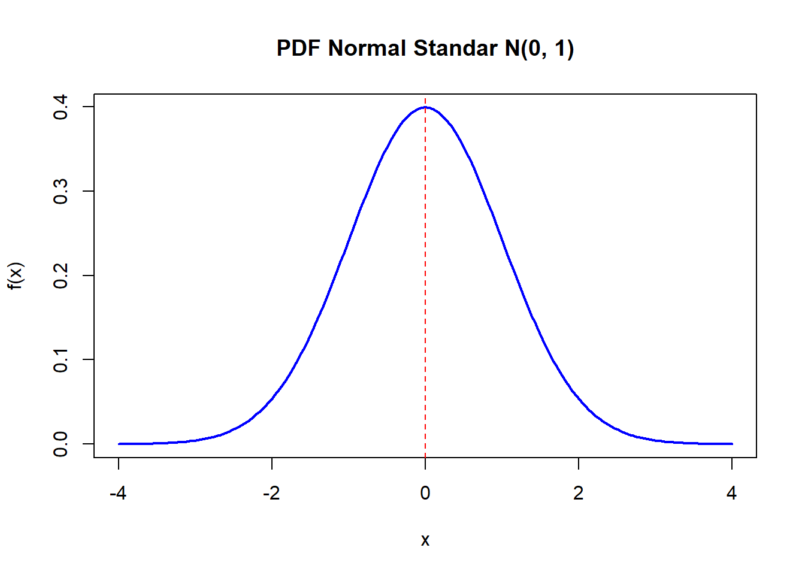
R
# X ~ Uniform(a=20, b=105)
a <- 20
b <- 105
# PDF
dunif(50, min = a, max = b)[1] 0.01176471# CDF: P(X ≤ x)
punif(50, min = a, max = b)[1] 0.3529412# Quantile
qunif(0.5, min = a, max = b)[1] 62.5# Random generation
random_unif <- runif(1000, min = a, max = b)
# Visualisasi PDF
x <- seq(a-10, b+10, length = 200)
plot(x, dunif(x, min = a, max = b),
type = "l", lwd = 3, col = "orange",
main = "PDF Uniform(20, 105)",
xlab = "x", ylab = "f(x)",
ylim = c(0, 0.02))
# Histogram dari random generation
hist(random_unif,
breaks = 30,
main = "Histogram 1000 sampel dari Uniform(20, 105)",
xlab = "Nilai X",
col = "lightyellow",
probability = TRUE)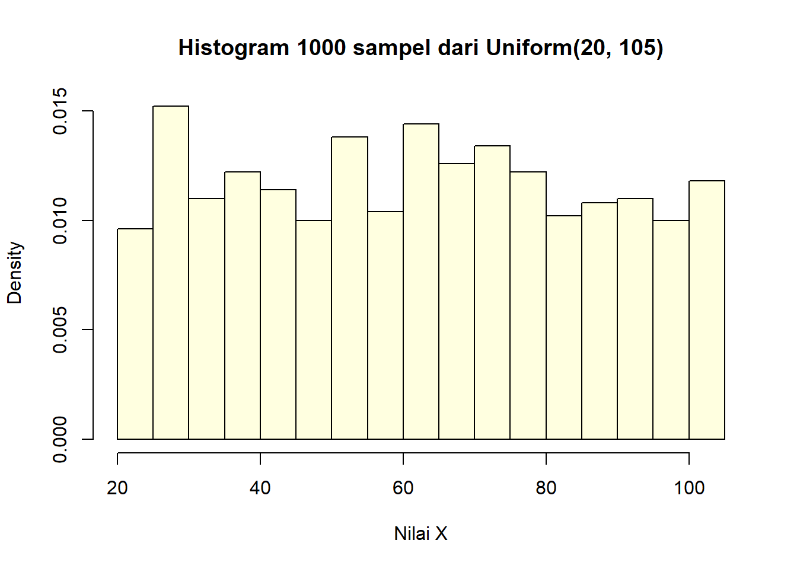
For Loop:
R
# For loop sederhana
for (i in 1:5) {
print(i * 2)
}[1] 2
[1] 4
[1] 6
[1] 8
[1] 10# Menyimpan hasil
hasil <- numeric(5)
for (i in 1:5) {
hasil[i] <- i^2
}
print(hasil)[1] 1 4 9 16 25Fungsi replicate:
Fungsi replicate sangat berguna untuk simulasi statistik.
R
# Mengulangi operasi 100 kali
hasil <- replicate(100, mean(rnorm(10)))
head(hasil)[1] -0.39491921 -0.04959657 0.04368116 -0.66597750 0.30500491 -0.38296128# Equivalent dengan for loop
hasil2 <- numeric(100)
for (i in 1:100) {
hasil2[i] <- mean(rnorm(10))
}Simulasi Distribusi Sample Mean:
R
# Populasi
populasi <- c(1, 2, 3, 4, 5, 6, 7, 8)
# Simulasi 1000 kali, sample size 30
set.seed(123)
sample_means <- replicate(1000, {
sample_data <- sample(populasi, 30, replace = TRUE)
mean(sample_data)
})
# Visualisasi
hist(sample_means,
main = "Distribution of Sample Means (n=30)",
xlab = "Sample Mean",
col = "lightblue",
breaks = 30,
probability = TRUE)
# Overlay normal curve
curve(dnorm(x, mean = mean(sample_means), sd = sd(sample_means)),
add = TRUE, col = "red", lwd = 2)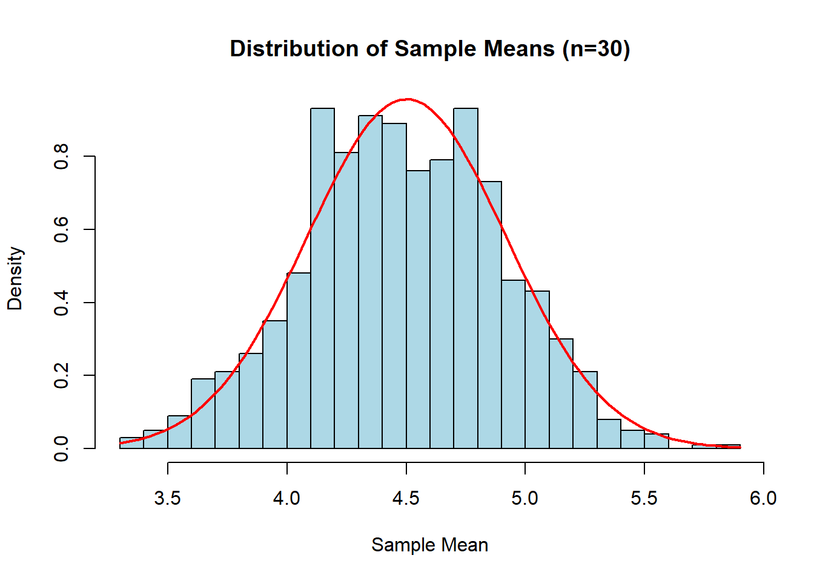
# Mean dan SD dari distribusi sample mean
cat(sprintf("Mean of sample means: %.4f\n", mean(sample_means)))Mean of sample means: 4.5013cat(sprintf("SD of sample means: %.4f\n", sd(sample_means)))SD of sample means: 0.4173Perbandingan Berbagai Ukuran Sampel:
R
# Simulasi dengan berbagai ukuran sampel
par(mfrow = c(2, 2))
for (n in c(5, 10, 30, 50)) {
sample_means <- replicate(1000, mean(sample(populasi, n, replace = TRUE)))
hist(sample_means,
main = paste("Sample Size =", n),
xlab = "Sample Mean",
col = "lightgreen",
breaks = 20,
probability = TRUE)
curve(dnorm(x, mean = mean(populasi), sd = sd(populasi)/sqrt(n)),
add = TRUE, col = "red", lwd = 2)
}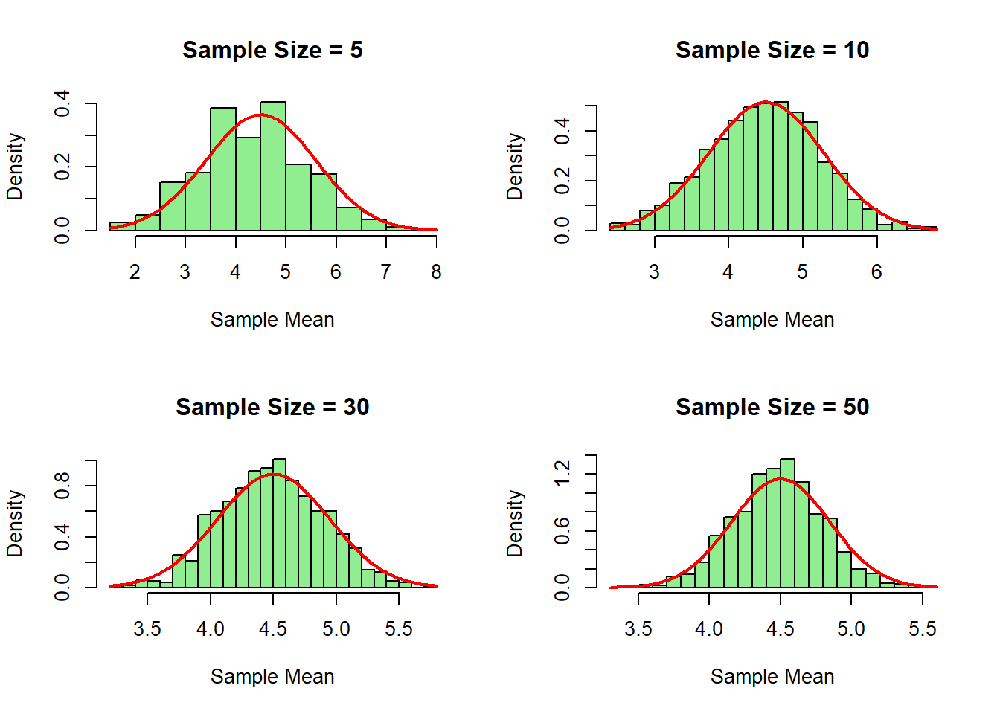
par(mfrow = c(1, 1))R
# Parameter populasi
mu <- 50
sigma <- 10
n <- 36
# Mean dan SD dari distribusi sample mean (berdasarkan CLT)
mu_xbar <- mu
sigma_xbar <- sigma / sqrt(n)
cat(sprintf("μ_X̄ = %.4f\n", mu_xbar))μ_X̄ = 50.0000cat(sprintf("σ_X̄ = %.4f\n", sigma_xbar))σ_X̄ = 1.6667# Contoh: P(45 < X̄ < 55)
prob <- pnorm(55, mean = mu_xbar, sd = sigma_xbar) -
pnorm(45, mean = mu_xbar, sd = sigma_xbar)
cat(sprintf("\nP(45 < X̄ < 55) = %.4f\n", prob))
P(45 < X̄ < 55) = 0.9973R
# Distribusi-t dengan df = 14
df <- 14
# PDF
dt(2, df = df)[1] 0.05950834# CDF: P(T ≤ t)
pt(2, df = df)[1] 0.967356# Quantile (t-tabel)
qt(0.975, df = df) # untuk α=0.025[1] 2.144787# Random generation
rt(100, df = df) [1] -2.62249002 -4.15406058 0.84861094 0.19334457 0.66940683 0.57401384
[7] 0.56665056 0.05276854 -0.51014017 -0.81351881 1.08366796 -0.63582645
[13] -0.30269643 -0.36414360 2.70317304 -0.71835290 -0.49096799 0.67749892
[19] -0.12060391 -1.28350798 0.94712489 -0.76391289 1.97659297 -0.47178298
[25] -0.23250629 0.55180275 -0.92795831 1.68531129 0.79484392 -0.21530552
[31] 0.73522088 2.58144307 0.02351631 -1.45275040 -2.71785259 -0.64265257
[37] -1.05466980 -0.48310054 2.13913209 -0.61807360 -0.14338389 -1.23879954
[43] -1.16364309 0.79165505 0.95575103 -0.21311130 -2.09228500 0.99684543
[49] 0.92379512 4.75640219 -0.15232457 -0.34448416 -0.28409469 0.14944620
[55] 0.50741149 -1.41303840 0.15097845 0.55426210 -2.14923488 -0.78741090
[61] -0.77821930 0.33839129 -2.33949419 0.69374910 0.06553566 0.17039155
[67] 0.04655677 0.10147598 -0.68217637 -0.13113890 1.44278813 -1.08139378
[73] -1.27419142 2.82360289 0.33074624 0.62801599 -0.58281145 0.07018520
[79] -0.15619497 0.52467228 -0.81856676 -0.81316681 -1.69441437 -0.27579374
[85] -0.24511727 -1.09968646 0.54965428 -0.12506035 0.12225031 -0.23304499
[91] 0.43738080 -0.11189371 -1.87866487 0.31271523 1.06313345 2.65770332
[97] 0.59661662 2.10665958 -0.66862829 1.20781391# Visualisasi: Perbandingan t vs Normal
x <- seq(-4, 4, length = 200)
plot(x, dnorm(x), type = "l", lwd = 2, col = "blue",
main = "Perbandingan Distribusi t vs Normal",
xlab = "x", ylab = "Density")
lines(x, dt(x, df = 5), col = "red", lwd = 2)
lines(x, dt(x, df = 14), col = "green", lwd = 2)
legend("topright",
legend = c("Normal", "t(df=5)", "t(df=14)"),
col = c("blue", "red", "green"), lwd = 2)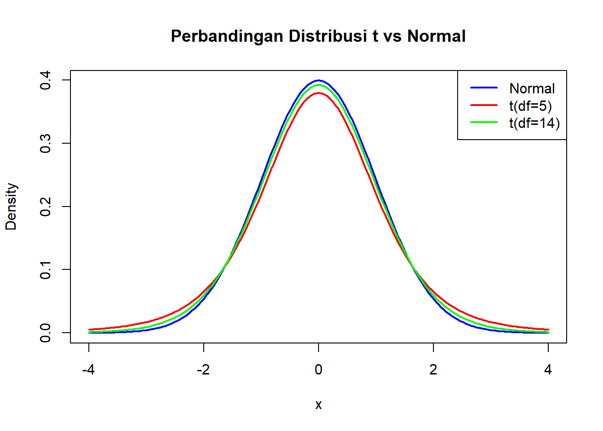
R
library(distrEx)R
# Load data
data(mtcars)
# Taksiran mean
mean_mpg <- mean(mtcars$mpg)
cat(sprintf("Taksiran mean mpg: %.4f\n", mean_mpg))Taksiran mean mpg: 20.0906# Taksiran variansi
var_mpg <- var(mtcars$mpg)
cat(sprintf("Taksiran variansi mpg: %.4f\n", var_mpg))Taksiran variansi mpg: 36.3241# Taksiran proporsi
prop_matic <- sum(mtcars$am == 0) / nrow(mtcars)
prop_manual <- sum(mtcars$am == 1) / nrow(mtcars)
cat(sprintf("Proporsi mobil matic: %.4f\n", prop_matic))Proporsi mobil matic: 0.5938cat(sprintf("Proporsi mobil manual: %.4f\n", prop_manual))Proporsi mobil manual: 0.4062R
# Data
x_bar <- mean(mtcars$mpg)
sigma <- 6 # variansi diketahui
n <- nrow(mtcars)
alpha <- 0.05
# CI 95%
z_critical <- qnorm(1 - alpha/2)
margin_error <- z_critical * sigma / sqrt(n)
lower <- x_bar - margin_error
upper <- x_bar + margin_error
cat(sprintf("CI 95%% untuk mean (σ diketahui): (%.4f, %.4f)\n", lower, upper))CI 95% untuk mean (σ diketahui): (18.0118, 22.1695)R
# Data
x_bar <- mean(mtcars$mpg)
s <- sd(mtcars$mpg)
n <- nrow(mtcars)
alpha <- 0.05
# CI 95% menggunakan t-distribution
t_critical <- qt(1 - alpha/2, df = n-1)
margin_error <- t_critical * s / sqrt(n)
lower <- x_bar - margin_error
upper <- x_bar + margin_error
cat(sprintf("CI 95%% untuk mean (σ tidak diketahui): (%.4f, %.4f)\n", lower, upper))CI 95% untuk mean (σ tidak diketahui): (17.9177, 22.2636)R
data(iris)
# Data
x1 <- iris$Sepal.Length[iris$Species == "setosa"]
x2 <- iris$Sepal.Length[iris$Species == "versicolor"]
mean1 <- mean(x1)
mean2 <- mean(x2)
var1 <- var(x1)
var2 <- var(x2)
n1 <- length(x1)
n2 <- length(x2)
# Variansi pooled
var_pooled <- ((n1-1)*var1 + (n2-1)*var2) / (n1 + n2 - 2)
sd_pooled <- sqrt(var_pooled)
alpha <- 0.05
# CI 95%
diff <- mean2 - mean1
t_critical <- qt(1-alpha/2, df = n1+n2-2)
margin_error <- t_critical * sd_pooled * sqrt(1/n1 + 1/n2)
lower <- diff - margin_error
upper <- diff + margin_error
cat(sprintf("CI 95%% untuk beda mean: (%.4f, %.4f)\n", lower, upper))CI 95% untuk beda mean: (0.7546, 1.1054)R
data(sleep)
# Hitung perbedaan
diff <- with(sleep, extra[group == 2] - extra[group == 1])
mean_diff <- mean(diff)
sd_diff <- sd(diff)
n <- length(diff)
alpha <- 0.05
# CI 95%
t_critical <- qt(1-alpha/2, df = n-1)
margin_error <- t_critical * sd_diff / sqrt(n)
lower <- mean_diff - margin_error
upper <- mean_diff + margin_error
cat(sprintf("CI 95%% untuk beda mean (paired): (%.4f, %.4f)\n", lower, upper))CI 95% untuk beda mean (paired): (0.7001, 2.4599)R
# H0: μ = 250
# H1: μ ≠ 250
# α = 0.05
mu_0 <- 250
alpha <- 0.05
# Statistik uji
x_bar <- mean(mtcars$disp)
s <- sd(mtcars$disp)
n <- nrow(mtcars)
Z <- (x_bar - mu_0) / (s / sqrt(n))
# Daerah penolakan
Z_lower <- qnorm(alpha/2)
Z_upper <- qnorm(1 - alpha/2)
# P-value
p_value <- 2 * (1 - pnorm(abs(Z)))
# Keputusan
keputusan <- ifelse(Z < Z_lower | Z > Z_upper, "H0 ditolak", "H0 diterima")
cat(sprintf("Statistik uji Z = %.4f\n", Z))Statistik uji Z = -0.8799cat(sprintf("Daerah penolakan: Z < %.4f atau Z > %.4f\n", Z_lower, Z_upper))Daerah penolakan: Z < -1.9600 atau Z > 1.9600cat(sprintf("P-value = %.6f\n", p_value))P-value = 0.378914cat(sprintf("Keputusan: %s\n", keputusan))Keputusan: H0 diterimaR
# H0: μ = 250
# H1: μ ≠ 250
result <- t.test(mtcars$disp, mu = 250, alternative = "two.sided")
cat("Hasil Uji-t:\n")Hasil Uji-t:print(result)
One Sample t-test
data: mtcars$disp
t = -0.8799, df = 31, p-value = 0.3857
alternative hypothesis: true mean is not equal to 250
95 percent confidence interval:
186.0372 275.4065
sample estimates:
mean of x
230.7219 R
# H0: μ1 = μ2
# H1: μ1 ≠ μ2
# Variansi sama
result_equal <- t.test(mtcars$disp[mtcars$am == 0],
mtcars$disp[mtcars$am == 1],
alternative = "two.sided",
var.equal = TRUE)
cat("Hasil Uji-t (Variansi Sama):\n")Hasil Uji-t (Variansi Sama):print(result_equal)
Two Sample t-test
data: mtcars$disp[mtcars$am == 0] and mtcars$disp[mtcars$am == 1]
t = 4.0152, df = 30, p-value = 0.0003662
alternative hypothesis: true difference in means is not equal to 0
95 percent confidence interval:
72.15611 221.54025
sample estimates:
mean of x mean of y
290.3789 143.5308 # Variansi berbeda
result_unequal <- t.test(mtcars$disp[mtcars$am == 0],
mtcars$disp[mtcars$am == 1],
alternative = "two.sided",
var.equal = FALSE)
cat("\nHasil Uji-t (Variansi Berbeda):\n")
Hasil Uji-t (Variansi Berbeda):print(result_unequal)
Welch Two Sample t-test
data: mtcars$disp[mtcars$am == 0] and mtcars$disp[mtcars$am == 1]
t = 4.1977, df = 29.258, p-value = 0.00023
alternative hypothesis: true difference in means is not equal to 0
95 percent confidence interval:
75.32779 218.36857
sample estimates:
mean of x mean of y
290.3789 143.5308 R
# Membuat data simulasi
set.seed(123)
pops.1 <- rnorm(n = 10, mean = 1, sd = 1)
pops.2 <- rnorm(n = 10, mean = 0.9, sd = 1)
pops.3 <- rnorm(n = 10, mean = 1.1, sd = 1)
pop.source <- c(rep("pops.1", 10), rep("pops.2", 10), rep("pops.3", 10))
pops.value <- c(pops.1, pops.2, pops.3)
data_anova <- data.frame(pop.source, pops.value)
# Uji ANOVA
# H0: μ1 = μ2 = μ3
# H1: setidaknya satu mean berbeda
result_anova <- aov(pops.value ~ pop.source, data = data_anova)
summary(result_anova) Df Sum Sq Mean Sq F value Pr(>F)
pop.source 2 1.16 0.5802 0.61 0.551
Residuals 27 25.68 0.9512 # F-tabel
k <- 3 # Banyak populasi
n <- 10 # Ukuran sampel per populasi
alpha <- 0.05
F_tabel <- qf(1-alpha, df1 = k-1, df2 = k*(n-1))
cat(sprintf("\nF-tabel = %.4f\n", F_tabel))
F-tabel = 3.3541R
# Menguji apakah dadu seimbang
set.seed(123)
dadu <- sample(1:6, 120, replace = TRUE)
# Frekuensi observasi
obs <- as.numeric(table(dadu))
# Uji Chi-squared
result_chi <- chisq.test(obs, p = rep(1/6, 6))
cat("Hasil Uji Chi-Squared:\n")Hasil Uji Chi-Squared:print(result_chi)
Chi-squared test for given probabilities
data: obs
X-squared = 5.6, df = 5, p-value = 0.3471# Chi-squared tabel
k <- 6
alpha <- 0.05
chi_sq_tabel <- qchisq(1-alpha, df = k-1)
cat(sprintf("\nChi-squared tabel = %.4f\n", chi_sq_tabel))
Chi-squared tabel = 11.0705R
# Menguji independensi treatment dan improvement
treatment_url <- "https://raw.githubusercontent.com/selva86/datasets/master/treatment.csv"
treatment <- read.csv(treatment_url)
# Tabel kontingensi
tabel <- table(treatment$treatment, treatment$improved)
# Uji Chi-squared
result <- chisq.test(tabel)
print(result)Menghitung Korelasi:
R
data(mtcars)
# Korelasi semua variabel (Pearson)
cor_matrix <- cor(mtcars)
round(cor_matrix, 2) mpg cyl disp hp drat wt qsec vs am gear carb
mpg 1.00 -0.85 -0.85 -0.78 0.68 -0.87 0.42 0.66 0.60 0.48 -0.55
cyl -0.85 1.00 0.90 0.83 -0.70 0.78 -0.59 -0.81 -0.52 -0.49 0.53
disp -0.85 0.90 1.00 0.79 -0.71 0.89 -0.43 -0.71 -0.59 -0.56 0.39
hp -0.78 0.83 0.79 1.00 -0.45 0.66 -0.71 -0.72 -0.24 -0.13 0.75
drat 0.68 -0.70 -0.71 -0.45 1.00 -0.71 0.09 0.44 0.71 0.70 -0.09
wt -0.87 0.78 0.89 0.66 -0.71 1.00 -0.17 -0.55 -0.69 -0.58 0.43
qsec 0.42 -0.59 -0.43 -0.71 0.09 -0.17 1.00 0.74 -0.23 -0.21 -0.66
vs 0.66 -0.81 -0.71 -0.72 0.44 -0.55 0.74 1.00 0.17 0.21 -0.57
am 0.60 -0.52 -0.59 -0.24 0.71 -0.69 -0.23 0.17 1.00 0.79 0.06
gear 0.48 -0.49 -0.56 -0.13 0.70 -0.58 -0.21 0.21 0.79 1.00 0.27
carb -0.55 0.53 0.39 0.75 -0.09 0.43 -0.66 -0.57 0.06 0.27 1.00# Korelasi antara dua variabel
cor_disp_wt <- cor(mtcars$disp, mtcars$wt)
cat(sprintf("Korelasi disp dan wt: %.4f\n", cor_disp_wt))Korelasi disp dan wt: 0.8880Visualisasi Korelasi (Heatmap):
R
install.packages("corrplot")R
library(corrplot)R
# Plot heatmap
corrplot(cor_matrix, method = "color", type = "upper",
tl.col = "black", tl.srt = 45,
addCoef.col = "black", number.cex = 0.7,
title = "Correlation Heatmap",
mar = c(0,0,1,0))
Uji Korelasi:
R
# H0: ρ = 0 (tidak ada korelasi)
# H1: ρ ≠ 0 (ada korelasi)
result_cor <- cor.test(mtcars$disp, mtcars$wt)
cat("Hasil Uji Korelasi:\n")Hasil Uji Korelasi:print(result_cor)
Pearson's product-moment correlation
data: mtcars$disp and mtcars$wt
t = 10.576, df = 30, p-value = 1.222e-11
alternative hypothesis: true correlation is not equal to 0
95 percent confidence interval:
0.7811586 0.9442902
sample estimates:
cor
0.8879799 Visualisasi dengan ggscatter:
R
install.packages("ggpubr")R
library(ggpubr)R
ggscatter(mtcars, x = "disp", y = "wt",
add = "reg.line",
cor.coef = TRUE, cor.method = "pearson",
xlab = "Displacement", ylab = "Weight",
title = "Correlation between Displacement and Weight")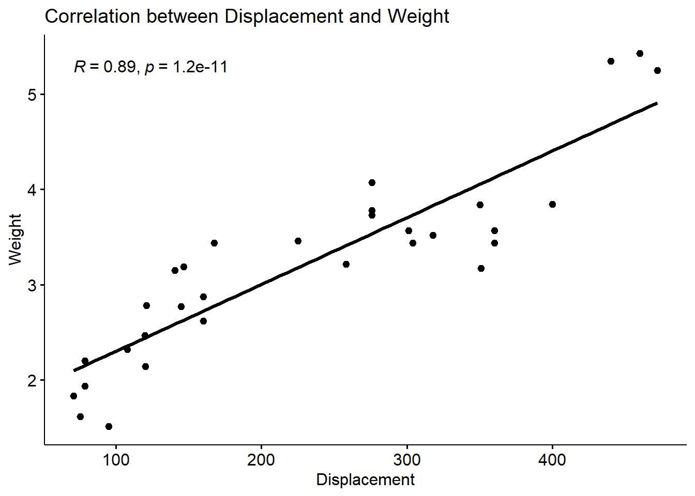
Membuat Model Regresi:
R
# Model: wt = β₀ + β₁(disp) + ε
model <- lm(wt ~ disp, data = mtcars)
# Melihat ringkasan
summary(model)
Call:
lm(formula = wt ~ disp, data = mtcars)
Residuals:
Min 1Q Median 3Q Max
-0.89044 -0.29775 -0.00684 0.33428 0.66525
Coefficients:
Estimate Std. Error t value Pr(>|t|)
(Intercept) 1.5998146 0.1729964 9.248 2.74e-10 ***
disp 0.0070103 0.0006629 10.576 1.22e-11 ***
---
Signif. codes: 0 '***' 0.001 '**' 0.01 '*' 0.05 '.' 0.1 ' ' 1
Residual standard error: 0.4574 on 30 degrees of freedom
Multiple R-squared: 0.7885, Adjusted R-squared: 0.7815
F-statistic: 111.8 on 1 and 30 DF, p-value: 1.222e-11Koefisien Regresi:
R
# Ekstrak koefisien
beta_0 <- coef(model)[1]
beta_1 <- coef(model)[2]
cat(sprintf("Persamaan regresi: wt = %.4f + %.6f × disp\n", beta_0, beta_1))Persamaan regresi: wt = 1.5998 + 0.007010 × dispcat(sprintf("\nInterpretasi:\n"))
Interpretasi:cat(sprintf("- Intercept (β₀) = %.4f\n", beta_0))- Intercept (β₀) = 1.5998cat(sprintf("- Slope (β₁) = %.6f\n", beta_1))- Slope (β₁) = 0.007010cat(sprintf("- Setiap kenaikan 1 unit displacement, rata-rata weight naik %.6f unit\n", beta_1))- Setiap kenaikan 1 unit displacement, rata-rata weight naik 0.007010 unitVisualisasi Regresi:
R
# Base R
plot(mtcars$disp, mtcars$wt,
main = "Weight vs Displacement",
xlab = "Displacement",
ylab = "Weight",
pch = 19, col = "blue")
abline(model, col = "red", lwd = 2)
# Menambahkan equation ke plot
legend("topleft",
legend = sprintf("wt = %.2f + %.4f × disp", beta_0, beta_1),
bty = "n", cex = 0.9)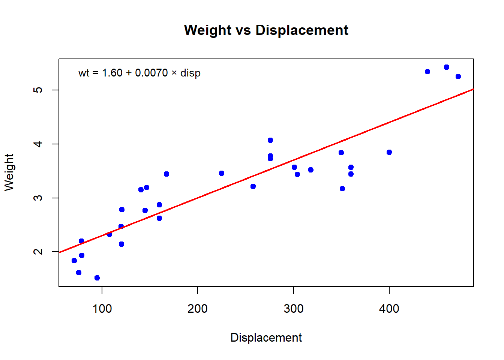
Dengan ggplot2:
R
ggplot(mtcars, aes(x = disp, y = wt)) +
geom_point(size = 3, color = "blue") +
geom_smooth(method = "lm", se = TRUE, color = "red") +
labs(title = "Linear Regression: Weight vs Displacement",
x = "Displacement (cu.in.)",
y = "Weight (1000 lbs)",
subtitle = sprintf("wt = %.2f + %.4f × disp", beta_0, beta_1)) +
theme_minimal()`geom_smooth()` using formula = 'y ~ x'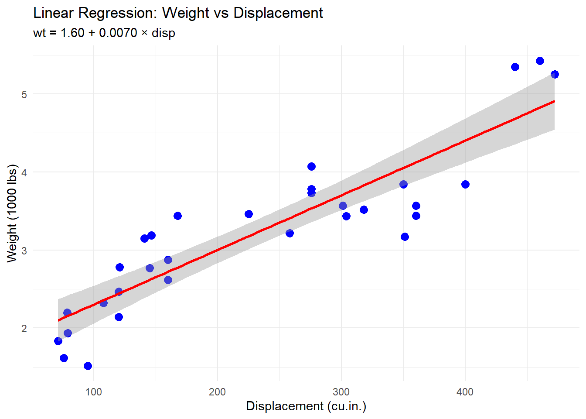
Diagnostik Model:
R
# Plot diagnostik
par(mfrow = c(2, 2))
plot(model)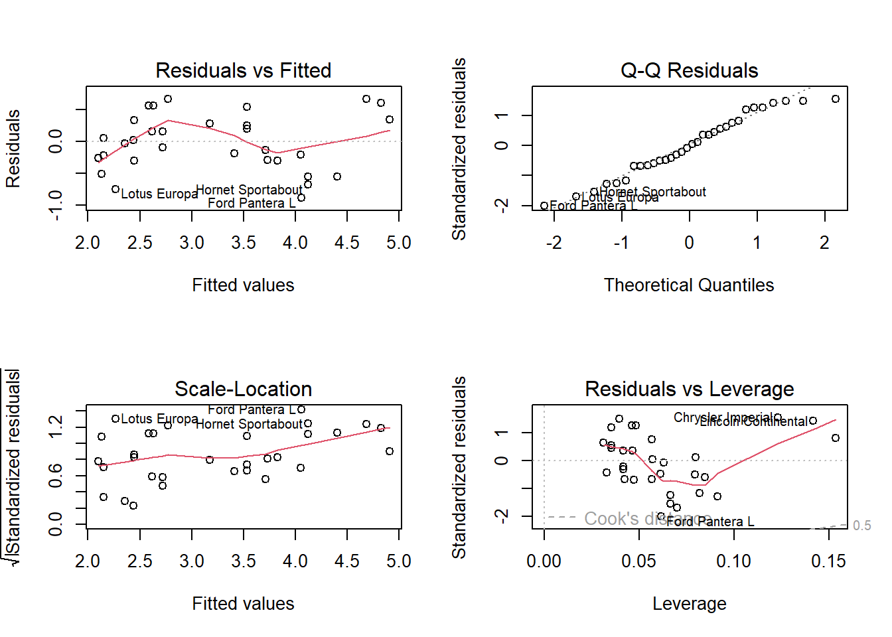
par(mfrow = c(1, 1))
# R-squared
r_squared <- summary(model)$r.squared
adj_r_squared <- summary(model)$adj.r.squared
cat(sprintf("\nGoodness of Fit:\n"))
Goodness of Fit:cat(sprintf("R-squared: %.4f\n", r_squared))R-squared: 0.7885cat(sprintf("Adjusted R-squared: %.4f\n", adj_r_squared))Adjusted R-squared: 0.7815cat(sprintf("Interpretasi: %.2f%% variasi weight dijelaskan oleh displacement\n",
r_squared * 100))Interpretasi: 78.85% variasi weight dijelaskan oleh displacementPrediksi:
R
# Prediksi untuk nilai baru
new_data <- data.frame(disp = c(150, 200, 250))
predictions <- predict(model, newdata = new_data, interval = "prediction")
cat("\nPrediksi Weight untuk Displacement baru:\n")
Prediksi Weight untuk Displacement baru:result_df <- cbind(new_data, predictions)
print(result_df) disp fit lwr upr
1 150 2.651363 1.696444 3.606283
2 200 3.001880 2.052322 3.951437
3 250 3.352396 2.403390 4.301401Luar biasa! Anda telah menyelesaikan review komprehensif materi R untuk Pengantar Sains Data. Mari kita rangkum perjalanan pembelajaran Anda:
Keterampilan yang Telah Dikuasai:
Selamat! Anda telah menguasai toolkit fundamental R untuk data science. Terus berlatih dan jangan takut untuk bereksperimen! 🎉